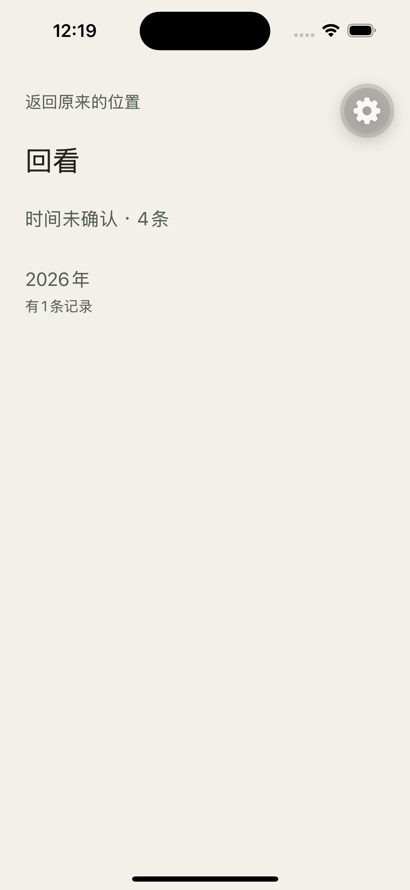

回看 · 跳转与同页展开
基线 61b1876。左列方案 A 用已拍的真页面；右列方案 B 是定稿（虚线）。横屏、iPad、VoiceOver：#34 未验证，不算通过。
本库真年页（A）

十一空月安静不可点。有记录的只有 9 月。还要再跳进整月月历。
空月 · 稀疏月（本库 2026-09）

A 为看 9月24日，先铺 29 个安静格。
2026年
B 采用。 空月不展开。有日记录的 9 月在年页拉出日期，不铺安静格。
密集月
2026年9月
A 星期位置清楚。本库尚无密集月实拍，此帧是结构稿，不是 PASS。
2026年
B 与现 XXXL 月页同一信息，少一次切页。星期位置交给日页标题。
月份未确认（年精度，在月份区域外）

A 根上「时间未确认」。此图是 #34 之前的回看根。年页上的「月份未确认」同理：在月份格外面。
2026年
「月份未确认」不进 9 月展开区。
B 年精度入口仍在月份格和「有记录的月份」之外，push /lookback/2026/unconfirmed。
只有月精度 · 没有具体日期
2026年3月
A 结构稿：月精度只出现在月页顶。本库无此实拍，不是 PASS。
2026年
B 3 月可展开（有日子未确认）。月份行「有3条记录」与年页 count 相同。展开后只有未确认行，进 /lookback/2026/03/unconfirmed。
展开后：日子未确认与日期分开
2026年
年精度在月份区域外。月精度在展开区内单独一行，在具体日期上面。月份行 3 = 未确认 2 + 24 日 1，与 getHistoryYear 的 count 相同。点未确认进原月未确认页；点 24 日进日页。
月深链与返回
2026年
深链 replace 成 /lookback/2026，9 月已展开。不是一张月历页。
回看
从展开区进日页或「日子未确认」再返回：仍停在年页，9 月仍开。冷启动月深链的返回落点是回看根，不是最近。
大字号

A 已不画三列，但仍要再进月页（月页 XXXL 也不画七列）。
2026年
B 列表下直接出日子。不因大字号恢复格子，也不多跳一页只含一行的月。
点日子之后（两案相同）

日页留下。不在年页展开正文或照片。返回年页时，B 要求 9 月仍展开。
不画
年页展开一条 Moment。回看根展开所有年。把「日子未确认」写成某一天。把「月份未确认」塞进某个展开月。用热力长度表示条数。把 #34 横屏 / iPad / VoiceOver 标成已通过。